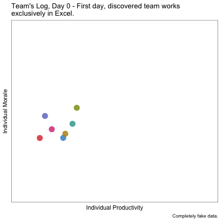

Upgrading to R #2: Failure’s Coming, Get Ready!
Prep in advance for things to be hard.
As a new manager working with my team of data scientists, upgrading to R meant doing something new, and something hard. As I should’ve known, new + hard is a great recipe for mistakes and failures. I learned a lot from those mistakes - lessons that I couldn’t have anticipated ahead of time. I’ll share my surprising (and less surprising) things I learned from one particular big failure in this blog post.
To start, here’s an animation I made that describes Alex’s big goof-up:
TL;DR: my team was working hard onboarding themselves to R, a mistake made it to a client, and I overreacted with new policies that burned a lot of my team’s goodwill. Regaining the team’s trust required eating some words, retracting some policies, and a bunch of all-team discussions to figure out how to do better in the future.
I should’ve realized that my team’s goodwill was my most precious resource as a manager. Squandering it wasn’t a simple matter of not being nice, it (thankfully temporarily) damaged my ability to effectively lead and guide them, and diminished the likelihood that they would do their best work. Here are some things I wish I’d done ahead of time.
Share More Context
As far as my teammate knew their role in this project was to create a plot in ggplot based on some data they were given. I’d shared very little about why that plot was important, where the data was coming from, or who was the intended audience. Without that knowledge, there were a multitude of ways my teammate could make totally sensible decisions that resulted in mistakes - mistakes that could’ve been avoided had I just shared more context.
Here’s something like the plot we were making:

Among the context I should’ve shared was that we couldn’t derive the color coding of the data points ourselves.1 Since I’d neglected make sure my teammate really understood what we were doing, my teammate just computed the color themselves (metric > threshold -> green, red otherwise). This totally reasonable choice, which resulted in mistakes the client noticed, could’ve totally been avoided had I spent a few more minutes sharing more context.
Prepare Emotionally
The number 1 thing I could’ve done to make this experience less bad was to avoid overreacting.2 If I could’ve gone back to a week before we found our mistake, I would’ve told past me that a mistake was inevitable, and that I should be ready to react - not unilaterally, but by rallying the team to fix the issue together.
The project was important, and the client seeing a mistake was bad. But draconian new procedures and rules resulted in ill-will from my team that was ultimately way more costly.
What eventually got us back on track was when we met as a team, and had a few meetings in the style of a blameless postmortem figuring out where communication had broken down and how we could avoid it next time. The guidelines we eventually generated and adopted as a group were actually pretty similar to the rules I’d introduced, but this time we were actually able to stick to them, because we’d generated them together.
Prepare Technically
Before this incident,I focused 100% of my mistake-avoiding attention on technical prepartion - explicit error avoidance and checking. I’ve since come to believe that error checking is an important part of the solution, but on a team that primarily produces data insights, the number one way to avoid errors is to give analysts and data scientists the knowledge they need to find mistakes themselves.
Sanity Checks
All data scientists know the horror of finishing an analysis, breathing a huge sigh of relief, sending it off, and then realizing that something just doesn’t add up. I’ve definitely had categories that add up to more than 100 percent, some 256 year-olds, and coefficents so big they could power a trip to the moon.3
Remembering to do these sanity checks before anything gets sent out is hard, especially since finding something might result in more work. This is doubly true for junior team members, who might not have made all these mistakes before and might not totally know what they’re looking for.
One strategy that helped was removing some of the cognitive load of what to check. That meant building analysis templates that included sanity checks on results, checklists for review and execution, and R packages that automated simple checks. Removing some of the cognitive load of remembering to do all these checks was relieving for junior and senior team members alike.
Code Review
Code review is great. But it was easy to believe only “real” code review (i.e. comments on github merge requests) mattered. More and more, I’ve come to think that the primary purpose of code review is to trigger thinking by the code’s author. Given that the author is 100x more familiar with it (to a first approximation), I found that code review that forces the writer to rethink what they’ve done catches many mistakes, and that the venue isn’t really important.
Since this incident, my team has gotten more consistent at using git for code reviews, but we’ve also gotten better at doing low-tech code review. Any review, no matter how low-tech, is 1,000x better than code review that didn’t happen because I was waiting for the team to “get up to speed with git”. Sometimes I even like to print out code, read through it, and mark it up like an essay. Decidedly low-tech, but really engages the mental compiler.
Takeaways
So, here are the big lessons I took home from my moment of failure:
- New + Hard -> Failure, and being emotionally ready is at least as importance as technical preparation.
- Overreacting to a mistakes as a manager can cause a bigger problem than the mistake itself.
- Always share more context.
- Technical solutions like templates, checklists, packages, and code review are great, but mostly because they reduce cognitive load of simple checks, or because they force the author to reengage.
A Coda: Book Recs
I can’t leave this blog post without sharing three book recommendations that really helped me. While the screw up I describe here is real, I wasn’t entirely without tools to cope, and these three books helped form my mental model for how we might think about recovery as a team.
- Rising Strong by Brene Brown is a great exploration of failure and recovery, it provides some interesting perspectives on failure and resilience from both a personal and professional level.
- High Output Management by Andy Grove is a pretty traditional “management” book, and his explanation of managing to task-relevant maturity has been a helpful way to think about helping the people I manage (or helping my managers help me) avoid potential mistakes and failures.
- Checklist Manifesto by Atul Gawande is one of my all time favorite books, and it really influenced the way I think about what should be automated vs checklisted vs left up to humans.
Footnotes
To be precise, whether the difference between the metric and the threshold was statistically significant, which we didn’t have the data to compute ourselves.↩︎
Especially if you’re the team lead, but really no matter what.↩︎
Or more likely 999 year-olds. Missing data should never have numeric codes, amirite?!?↩︎